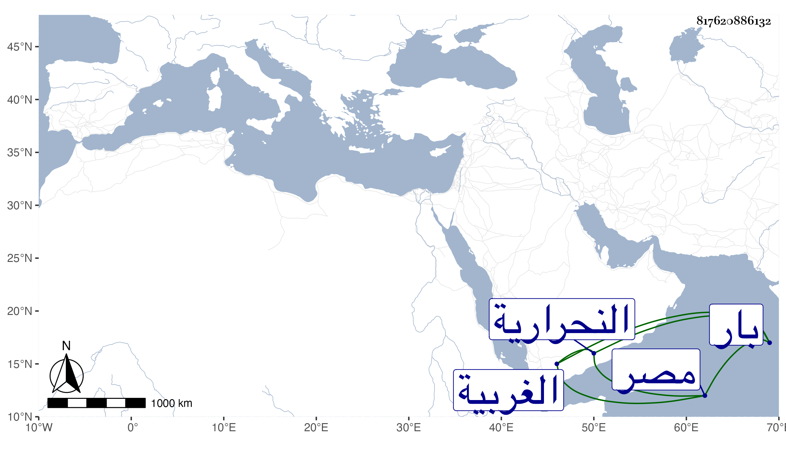

0902Sakhawi.DawLamic.ITO20230111-ara1.EIS1600.817620886132
Biography ID: 817620886132
711
علي بن حسن بن علي بن بدر النور أبو البقاء وأبو الحسن الباري نسبة لمحلة بار بالقرب من النحرارية من الغربية كان جده خادم الضريح بها الأزهري الشافعي المقرئ الضرير ويعرف بأبي عبد القادر وهو بها أشهر . ممن أخذ القراءات عن التاج بن تمرية وطاهر المالكي والنور الحبيبي وعبد الدائم الأزهري وتصدى للإقراء فانتفع به وشهد عليه الأكابر بل وأثبت شيخنا اسمه في القراء بمصر في وسط هذا القرن وكان ضيق العطن خيرا . مات بعد الخمسين أو قريبها .
